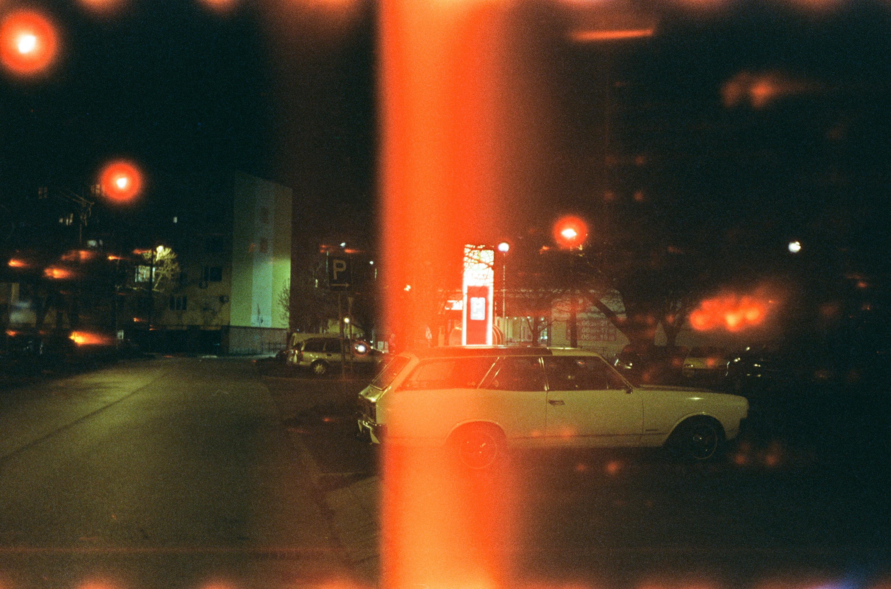
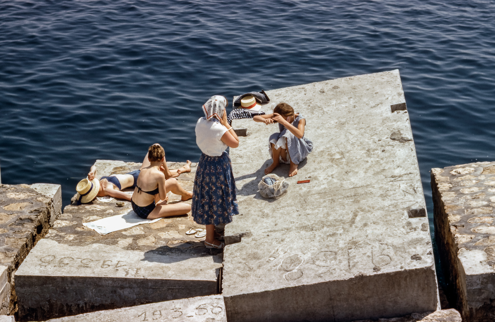
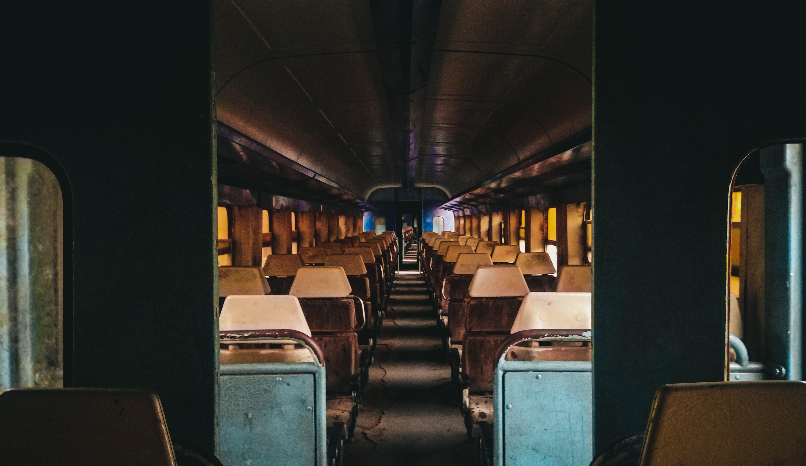
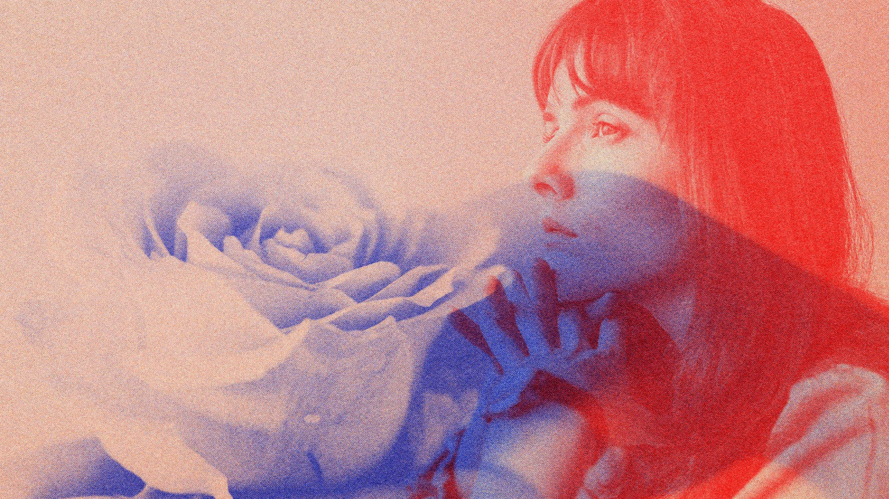

Estilos de Edición Fotográfica
Sep 11 , 2023 8:00 AM
Bienvenidos a un emocionante viaje a través de la edición fotográfica en nuestro blog. En este espacio, exploraremos a fondo los diversos estilos de edición que transforman simples imágenes en obras de arte visuales y narrativas cautivadoras. Desde el realismo aumentado que resalta la belleza auténtica hasta los tonos cálidos del vintage que evocan la nostalgia, nuestro blog le sumergirá en un mundo de creatividad y técnica, brindándole la inspiración y las herramientas necesarias para llevar sus habilidades de edición al siguiente nivel.
Si está listo para descubrir los secretos detrás de las imágenes impactantes y aprender cómo aplicar estos estilos a sus propias fotografías, le invitamos a explorar nuestras entradas y desatar su potencial artístico en el emocionante universo de la edición fotográfica. Acompáñenos en este recorrido visual y creativo para transformar sus fotos en historias visuales que cautivarán a su audiencia.
6 estilos de edición que debes conocer:
1. Estilo "Film Grain" (Grano de Película):
El estilo "Film Grain" se inspira en la apariencia de las películas cinematográficas tradicionales. Agrega un sutil grano o textura a la imagen para darle un aspecto similar al de las fotografías tomadas con película. Este efecto puede evocar la nostalgia y la sensación de una fotografía clásica. Se utiliza para lograr un aspecto vintage y auténtico en las imágenes digitales.
2. Vintage y Tonalidades Cálidas:
Este estilo de edición busca evocar la nostalgia y el encanto de épocas pasadas. Se caracteriza por el uso de tonalidades cálidas, como sepia o tonos dorados, que otorgan a las imágenes un aspecto antiguo y atemporal. A menudo, se aplican efectos de envejecimiento para crear un ambiente vintage.
3. Estilo "HDR Look" (Alto Rango Dinámico):
El estilo "HDR Look" se centra en la creación de imágenes con un alto rango dinámico, lo que significa que se capturan y realzan tanto los detalles en las sombras como en las luces. Esto se logra mediante la combinación de múltiples exposiciones de la misma escena. El resultado es una imagen con un aspecto nítido y lleno de detalles en toda su gama tonal, lo que puede dar una sensación de realismo y profundidad a la fotografía.

4. Estilo Cinematográfico:
El estilo cinematográfico de edición busca emular la apariencia de las películas de cine. Se caracteriza por el uso cuidadoso del color y la iluminación para crear una narrativa visual. Los colores pueden ser desaturados o ajustados para lograr una paleta específica que evoca la atmósfera deseada. Este estilo es especialmente popular en la fotografía de bodas y retratos elegantes.
5. Estilo Duotono (Duotone):
El estilo duotono es una técnica de edición que utiliza dos colores específicos para crear una imagen con un aspecto distintivo y moderno. En lugar de una gama completa de colores, se eligen dos tonos que contrasten y se aplican a la imagen para resaltar formas y detalles de una manera única. Este estilo es popular en diseño gráfico y se utiliza para dar a las imágenes un aspecto contemporáneo y atractivo.
